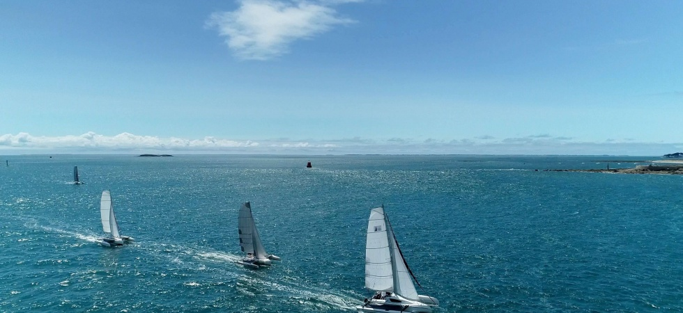

Lightness and performance
Efficient multihull form turns a fresh breeze into responsive, memorable sailing—and the trailer makes a new body of water part of the plan.
The Suntrail story
Suntrail was formed by sailing enthusiasts around a simple idea: the right sailboat should expand where you can go and how often you can sail—not complicate your life.
The missing middle
We saw an unmet need in the American market. Many sailors want more capability than a dinghy, without the cost, complexity or permanent marina commitment of a conventional cruising boat.
What was missing was a genuinely trailerable sailboat around twenty feet: light enough to tow toward a new coastline, habitable enough for a night or weekend aboard, and confidence-inspiring enough to share with family and friends.
Efficient multihull form turns a fresh breeze into responsive, memorable sailing—and the trailer makes a new body of water part of the plan.
Exceptional stability and limited heeling create a reassuring platform for couples, families and friends to enjoy time together.
A natural partnership
Astusboats is a specialist French shipyard whose practical, innovative trimarans share our vision. The Astus 20.5 embodies the trailerable, habitable sailboat that first inspired Suntrail. The complete Astus range—from compact day boats to capable transportable cruisers—extends that freedom to sailors with different ambitions.
Suntrail brings these boats to American sailors with personal guidance before and after delivery, thoughtful equipment choices and a conversation-first approach.
Meet the Astus range →
Your story starts here
Tell us what freedom on the water means to you. Suntrail will help you find the boat—and the path—that fits.
Start a conversation →